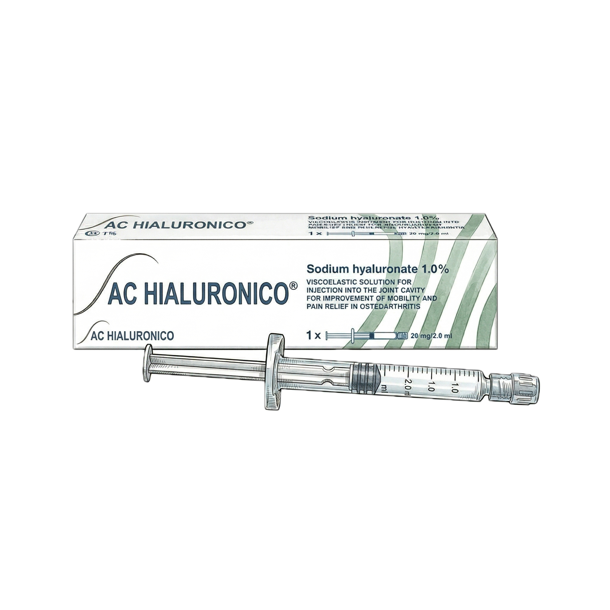

Introducción
¿Qué es una infiltración?
Una infiltración es una inyección directa dentro de la articulación de la rodilla. Se realiza en consulta, sin necesidad de quirófano, y su objetivo es aliviar el dolor y mejorar la función articular.
Es uno de los tratamientos más frecuentes en consulta de traumatología, especialmente en pacientes con artrosis de rodilla (desgaste del cartílago) que aún no necesitan cirugía o que buscan retrasar una prótesis.
La analogía del motor
Piensa en tu rodilla artrósica como un motor con desgaste. El cartílago (el «lubricante natural») se ha ido deteriorando, las superficies rozan más de lo debido y eso genera inflamación y dolor. Ante esta situación, existen tres enfoques distintos:
- Corticoides: Como usar un extintor. Apaga el fuego (la inflamación) de forma rápida y eficaz, pero no repara los daños que el incendio ya causó.
- Ácido hialurónico: Como echar aceite a un motor. Reduce la fricción y el ruido del día a día, pero no repara las piezas desgastadas.
- PRP (Plasma Rico en Plaquetas): Como enviar un equipo de reparación fabricado a partir de tu propia sangre. No reconstruye lo destruido, pero puede mejorar el entorno articular y frenar el deterioro.
Ninguna infiltración sustituye una rodilla nueva. Pero bien indicada, puede aliviar síntomas, ganar tiempo y mejorar la calidad de vida durante meses.
¿Cuándo están indicadas?
- Artrosis de rodilla leve a moderada (grados I a III de Kellgren-Lawrence)
- Cuando el tratamiento básico (ejercicio, antiinflamatorios, pérdida de peso) no es suficiente
- Como puente antes de una cirugía o en pacientes que no son candidatos quirúrgicos
- Para controlar episodios de dolor agudo (en el caso de los corticoides)
Las guías clínicas internacionales (AAOS, OARSI, ESSKA) coinciden: antes de cualquier infiltración, el pilar del tratamiento es el ejercicio físico regular, el control del peso y los antiinflamatorios tópicos u orales. Las infiltraciones complementan, no sustituyen.
Corticoides
Evidencia moderada
El extintor de la inflamación
Los corticoides intraarticulares (como la triamcinolona o la betametasona) son potentes antiinflamatorios. Su efecto es rápido: en 24–48 horas notarás una reducción clara del dolor y la hinchazón.
Sin embargo, su acción es temporal. Es el extintor: apaga el fuego de forma eficaz pero no repara lo que ya se quemó.
¿Qué dice la evidencia?
- Duración del efecto: Entre 2 y 6 semanas. Tras ese periodo, el dolor tiende a regresar progresivamente.
- Eficacia a largo plazo: En los estudios comparativos más recientes, los corticoides ocupan la última posición en eficacia a partir de los 6 meses (SUCRA 15 sobre 100, según el metaanálisis en red de Jawanda et al. 2024, publicado en Arthroscopy).
- Recomendación de las guías: La AAOS y la mayoría de sociedades los recomiendan solo para alivio a corto plazo, no como tratamiento crónico.
Ventajas
- Alivio rápido del dolor (horas/días)
- Coste bajo
- Cubierto habitualmente por las compañías aseguradoras
- Útil para crisis agudas de dolor (antes de un viaje, un evento importante)
Limitaciones
- Efecto muy limitado en el tiempo (semanas, no meses)
- No modifica el curso de la artrosis
- Mayor tasa de efectos adversos locales respecto a otras opciones (11% según el metaanálisis de seguridad de la ESSKA, 2025)
Un estudio publicado en JAMA (McAlindon et al. 2017) mostró que las infiltraciones repetidas de corticoides cada 3 meses durante 2 años se asociaron a una pérdida ligeramente mayor de cartílago en resonancia magnética. La relevancia clínica de esta diferencia es debatida entre expertos, pero por este motivo se recomienda no abusar de las infiltraciones repetidas de corticoides y espaciarlas al menos 3–4 meses.
Los corticoides son una herramienta útil para el rescate rápido del dolor, especialmente en crisis inflamatorias agudas. No son la mejor opción para el manejo a medio o largo plazo.
Ácido Hialurónico
Evidencia contradictoria
El lubricante articular
El ácido hialurónico (AH) es una sustancia que tu rodilla produce de forma natural. En la artrosis, su concentración y calidad disminuyen. La infiltración de AH (también llamada viscosuplementación) pretende restaurar esa lubricación perdida.
Es el aceite para el motor: reduce la fricción y permite que las superficies se deslicen con menos resistencia, pero no repara las piezas desgastadas.

Viscosuplementación: infiltración intraarticular de ácido hialurónico
¿Qué dice la evidencia?
- Duración del efecto: Entre 3 y 6 meses, superior a los corticoides.
- Eficacia: Mejora modesta respecto al placebo. En los rankings de eficacia, ocupa una posición intermedia (SUCRA 53 sobre 100).
- Seguridad: Buen perfil. Tiene la tasa de infección más baja de las tres opciones (0,1%) y no genera preocupaciones sobre el cartílago.
La polémica de las guías
El ácido hialurónico es probablemente la infiltración más controvertida en la literatura médica actual. Las principales sociedades científicas no se ponen de acuerdo:
- AAOS (americana): Recomienda en contra de su uso rutinario
- OARSI (internacional): Recomendación condicional a favor
- ESCEO (europea): Recomendación a favor
Este desacuerdo refleja que, aunque puede ayudar a algunos pacientes, los estudios no demuestran un beneficio consistente que supere claramente el efecto placebo en la población general.
Ventajas
- Duración superior a los corticoides (meses vs. semanas)
- Muy buen perfil de seguridad
- Sin riesgo de daño al cartílago
- Puede repetirse cada 6–12 meses
Limitaciones
- Mejora modesta respecto al placebo
- Eficacia cuestionada por varias guías clínicas de referencia
- No cubierto por la mayoría de compañías aseguradoras — se abona de forma privada
- Puede requerir varias sesiones (según el preparado: 1, 3 o 5 inyecciones)
El ácido hialurónico es una opción segura con un efecto de duración intermedia. Sin embargo, su eficacia ha sido cuestionada por parte de la comunidad científica y no está cubierto por las aseguradoras. Si vas a abonar un tratamiento de tu bolsillo, conviene conocer todas las opciones antes de decidir.
PRP — Plasma Rico en Plaquetas
ESSKA 2024 — Grado A
Tu propio equipo de reparación
El PRP es un concentrado obtenido a partir de tu propia sangre. Se extrae una pequeña muestra, se centrifuga para separar sus componentes, y se obtiene un plasma enriquecido en plaquetas que contiene factores de crecimiento — las mismas señales que tu cuerpo utiliza de forma natural para reparar tejidos.
No es magia ni terapia de células madre. Es biología aplicada: enviar un equipo de reparación concentrado a una zona que lo necesita.
¿Cómo funciona?
Las plaquetas contienen gránulos con factores de crecimiento (PDGF, TGF-β, VEGF, IGF-1) que al liberarse dentro de la articulación:
- Modulan la inflamación — reducen las moléculas inflamatorias sin los efectos secundarios de los corticoides
- Estimulan la reparación — promueven la síntesis de colágeno y proteoglicanos (componentes del cartílago)
- Mejoran el entorno articular — favorecen un ambiente biológico más saludable para el cartílago que aún queda
Importante: el PRP no regenera cartílago destruido. Lo que hace es mejorar las condiciones para que lo que queda funcione mejor y se deteriore más lentamente.
No todos los PRP son iguales
Uno de los problemas históricos del PRP es que se ha tratado como un producto único cuando en realidad hay diferencias importantes en cómo se prepara:
- Bajo en leucócitos (LP-PRP): El más adecuado para inyección dentro de la articulación. Los leucócitos (glóbulos blancos) pueden provocar inflamación adicional, que es precisamente lo que queremos evitar.
- Concentración óptima: Los estudios sugieren un mínimo de ~1.000.000 plaquetas/µL (unas 3–5 veces la concentración basal). Un PRP con baja concentración (<800.000 plaquetas/µL) no logra una mejoría del dolor perceptible por el paciente frente a placebo y pierde efecto funcional a los 12 meses (Bensa et al. 2025). Más no siempre es mejor, pero preparados con pocas plaquetas pueden quedarse cortos.
- No activado: Para uso intraarticular, se prefiere sin activar para que la liberación de factores sea progresiva y no genere un pico inflamatorio.
La calidad del PRP depende del sistema de preparación y del protocolo utilizado. No todos los PRP del mercado son equivalentes. Es recomendable que lo realice un profesional con experiencia en ortobiología.
¿Qué dice la evidencia?
El PRP ha experimentado un avance notable en los últimos años. Los datos más recientes y de mayor calidad lo sitúan como la opción con mejor evidencia a medio y largo plazo:
- Duración del efecto: Entre 6 y 12 meses o más. Es la opción más duradera de las tres.
- Eficacia: Ocupa la primera posición en los rankings de eficacia (SUCRA 91,5 sobre 100) según el mayor metaanálisis en red publicado (Jawanda et al. 2024, 48 estudios, 9.338 rodillas).
- Seguridad: La tasa de eventos adversos más baja de las tres opciones (8,7% frente a 10,5% del hialurónico y 11% de los corticoides), según el metaanálisis de seguridad de la ESSKA de 2025 con más de 76.000 pacientes.
- Recomendaciones: En 2024, la ESSKA (la sociedad europea de referencia en cirugía de rodilla) emitió una recomendación de Grado A a favor del PRP en artrosis de rodilla grados I a III, a través de sus consensos ESSKA-ORBIT y ESSKA-ICRS.
- Mejora perceptible por el paciente: La mejoría del PRP frente a placebo no es solo estadística: es clínicamente perceptible. Un metaanálisis de 18 ensayos clínicos (Bensa et al. 2025, Am J Sports Med) demostró que el PRP supera el umbral de mejora mínima relevante para el paciente en función articular a 1, 3, 6 y 12 meses, y en dolor a 3 y 6 meses.
Ventajas
- Mayor duración del efecto (6–12+ meses)
- Mejor perfil de seguridad de las tres opciones
- Producto autólogo (de tu propia sangre) — sin riesgo de rechazo ni alergia
- No daña el cartílago
- Respaldado por el consenso europeo más reciente (ESSKA 2024)
Limitaciones
- No cubierto por las compañías aseguradoras — se abona de forma privada, al igual que el ácido hialurónico
- No está indicado en artrosis avanzada (grado IV): cuando el cartílago ha desaparecido prácticamente por completo, no hay tejido viable que mejorar
- La calidad del producto varía según el sistema de preparación utilizado
- La eficacia depende de la concentración de plaquetas: preparados con baja concentración no superan el umbral de beneficio clínico frente a placebo en dolor
- Algunas guías americanas aún no lo incluyen en sus recomendaciones principales (AAOS 2022: evidencia «inconsistente»), aunque los estudios publicados desde entonces han aportado datos más sólidos
El PRP es actualmente la infiltración con mejor evidencia científica a medio y largo plazo para la artrosis de rodilla leve a moderada. Es seguro, autólogo y respaldado por las principales sociedades europeas. Su principal barrera es que, al igual que el ácido hialurónico, no está cubierto por la mayoría de seguros médicos.
Comparativa
Las tres opciones frente a frente
Esta tabla resume los datos de los metaanálisis y consensos más recientes (2024–2025). Los valores en verde indican la mejor opción en cada categoría.
| Corticoides | Ác. Hialurónico | PRP | |
|---|---|---|---|
| Duración del efecto | 2–6 semanas | 3–6 meses | 6–12+ meses |
| Eficacia (SUCRA) | 15 / 100 | 53 / 100 | 91,5 / 100 |
| Eventos adversos | 11,0% | 10,5% | 8,7% |
| Riesgo para el cartílago | Posible con uso repetido | No descrito | No descrito |
| Cobertura seguro | Sí | No | No |
| ESSKA 2024 | Solo corto plazo | Sin consenso | Grado A |
| Mejor para… | Crisis aguda de dolor | Mantenimiento suave | Tratamiento a medio-largo plazo |
¿Cuál es para mí?
- Corticoides. Efecto en horas. Ideal para crisis puntuales, eventos o como puente antes de otra intervención. Cubierto por seguro.
- PRP. La opción con mayor duración, mejor eficacia a medio-largo plazo y mejor perfil de seguridad. Si vas a invertir de tu bolsillo, la evidencia respalda esta opción por encima de las demás.
- Corticoides para rescate del dolor. Ni el PRP ni el hialurónico han demostrado beneficio en artrosis terminal. La opción definitiva en estos casos suele ser la cirugía (prótesis de rodilla).
Tanto el ácido hialurónico como el PRP se abonan de forma privada (las compañías no los cubren). Si ambas opciones suponen un gasto del bolsillo del paciente, merece la pena conocer que la evidencia científica actual es significativamente más favorable para el PRP en prácticamente todos los parámetros estudiados.
El procedimiento
¿Cómo se realiza una infiltración?
Todas las infiltraciones se realizan en consulta, sin anestesia general ni quirófano. El procedimiento dura entre 5 y 15 minutos según el tipo.
Después de la infiltración
- Aplicar frío local 15–20 minutos si hay molestia
- Caminar con normalidad
- Tomar paracetamol si tienes dolor leve
- Retomar actividad normal en 24–48 horas
- Hidratar bien la zona de punción
- Ejercicio intenso las primeras 48 horas
- Sumergir la rodilla en piscina/bañera 24h
- Masajear la zona de punción
- Tomar antiinflamatorios (AINEs) tras PRP
Los antiinflamatorios (ibuprofeno, naproxeno, etc.) pueden bloquear parte del efecto biológico del PRP, que actúa precisamente modulando la inflamación. Si necesitas analgésico, usa paracetamol. Consulta siempre con tu cirujano.
Preguntas frecuentes
¿Duele la infiltración?
¿Cuántas sesiones necesito?
¿Puedo conducir después?
¿Lo cubre mi seguro médico?
¿Se pueden combinar distintas infiltraciones?
¿Funciona en artrosis avanzada?
¿Hay algún efecto secundario?
¿Puedo hacer vida normal después?
¿Cuál me recomienda mi cirujano?
¿Las infiltraciones retrasan la necesidad de prótesis?
Bibliografía
Esta guía está basada en los siguientes artículos científicos y consensos de sociedades médicas:
- Jawanda H, et al. Platelet-Rich Plasma Is the Most Efficacious Injection Therapy for Knee Osteoarthritis: A Network Meta-analysis. Arthroscopy. 2024. PMID: 38331363
- Bensa A, et al. Corticosteroids, hyaluronic acid, and platelet-rich plasma in the treatment of knee osteoarthritis. EFORT Open Rev. 2024. PMID: 39222336
- Bensa A, et al. Safety of intra-articular injections in knee osteoarthritis: a meta-analysis of 76,061 patients (ESSKA). KSSTA. 2025. PMID: 41451630
- Kon E, et al. ESSKA-ICRS consensus on the use of PRP for knee cartilage pathology. KSSTA. 2024. PMID: 38961773
- Laver L, et al. ESSKA-ORBIT consensus: PRP in knee osteoarthritis — Grade A recommendation. KSSTA. 2024. PMID: 38436492
- McAlindon TE, et al. Effect of Intra-articular Triamcinolone vs Saline on Knee Cartilage Volume and Pain in Patients With Knee Osteoarthritis: A Randomized Clinical Trial. JAMA. 2017. PMID: 28510679
- Hawley S, et al. Intra-articular corticosteroid injections and knee replacement risk: a national cohort study. BMC Medicine. 2025. PMID: 40189536
- Hohmann E, et al. Platelet concentration matters: a meta-analysis of PRP for knee osteoarthritis. Knee Surg Sports Traumatol Arthrosc. 2024. PMID: 38604391
- Bensa A, et al. PRP Injections for the Treatment of Knee Osteoarthritis: The Improvement Is Clinically Significant and Influenced by Platelet Concentration. Am J Sports Med. 2025;53(3):745–754. PMID: 39751394
- AAOS Clinical Practice Guideline: Management of Osteoarthritis of the Knee (3rd Ed). J Am Acad Orthop Surg. 2022. PMID: 35383651
La medicina evoluciona constantemente. Esta guía ha sido elaborada con la mejor evidencia disponible a fecha de 2025. Las guías clínicas americanas (AAOS) se publicaron en 2022 y están pendientes de actualización con los datos más recientes sobre PRP. Los consensos europeos (ESSKA 2024) incorporan los estudios más actualizados.
Tu decisión, informada
Una buena infiltración empieza por una buena indicación. El objetivo de esta guía es que dispongas de información veraz y actualizada para tomar una decisión junto a tu cirujano, sabiendo qué esperar de cada opción.